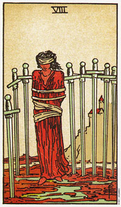

宝剑八暗示限制及丧失个人的能力。
在宝剑二当中，这女人自行蒙上双眼，而在这张宝剑八当中，从她被捆绑的方式暗示她是被他人所囚禁，或因他人而丧失力量的。在她背后小山丘上的城堡所代表的是权威。而也就是这项权威说服了她(至少在她的心里面)，是她相信她的选择是有限的，或她是被束缚的(被迫，被限制等)。
这名女子穿着橘色和红色的衣服，暗示她肉体上的热情和勇气被她的想法绊住了。她的双足处有水，暗示她的情感是容易接近的，只要她选择去感受它们的话。眼罩使她无法认清远方的城堡比她所想象或记忆中的来得小。
注意看她的腿并没有被绑起来。事实上只要她想走，随时都可以得到自由，然而她的恐惧和困惑却令她停留于原地。如果有人帮助你的身体，那要释放你很容易，然而如果有人在精神束缚了你，那要恢复你的自由可就是一段缓慢而需要谨慎小心的过程了。关于这点，许多咨商辅导员都可以证实。
八这张牌可能暗示，你相信除了被役使之外，你别无选择，果真如此的话，你就没有任何选择余地了。你可能会被你的伴侣、家人、社区、政府、心灵或宗教信仰所压迫。
神智学(Theosophical)协会的创办人博拉瓦斯基(H.P.Blavatski)认为，我们经常被我们自己或别人所欺骗。宝剑八代表这种欺骗及其结果：丧失力量。
当宝剑八出现在一副牌中，不论别人想你说些什么，你要倾听你的感觉，因为它们将会让你了解事情的真相，以及找到你自己。这个时刻你要相信自己内在的感觉，而不要去管别人告诉你的话。
大体上的意义
宝剑八代表的是你被限制住的一段时间，或是在某种情况下你失去个人的能力。你觉得动弹不得，受到限制，而且没有办法看清楚你前面的路。
去探索那等待着你的道路吧，利用你内在的力量和个人的能力，将自己从目前的情况中释放出来，并且把那些曾经屈服于他人的个人能量重新召唤回来。你的信念其实才是你最大的限制。好好自省并检视这些信念，因为事实上目前的“眼罩”是在帮助你，因为它可以让你不会分心。
在健康的分析方面，宝剑八可能暗示气喘或胸腔方面的疾病，因为当你感觉到受压迫的时候，通常呼吸是有困难的。
两性关系上的意义
宝剑八显示两性关系上的限制。它可能是两性关系中的一个约束性的角色，或可能是你在这种情况下感觉到被套牢或被束缚。
珍妮丝在询问两性关系时翻到了八这张牌时。她觉得她和麦克之间的关系是一种严重的关系，在他意外受伤的时候，她正打算离开他。他在床上躺了六个月，康复之后，他需要感觉上的支持。她觉得现在是不可能离开他了，且更因此觉得被捆绑在这份关系中动弹不得。
珍妮丝的自我探索，再次去发掘她内在的力量或学会对她有所助益。或许她会发现她以前没有察觉的解决之道。
倒立的宝剑八
当宝剑八出现倒立，你可以把眼罩除去，看清楚事物本身的面貌。这八把剑，每一把都代表一种对生命的特殊信念，而现在已经松绑了。你可以从对生命种种限制性的信念中解放，给自己自由。从日常的角度来看，它意味最坏的情况现在已经过去了。给予更清晰的认知，现在你可以做出比较健康的选择了。
这是一张象征限制之后解放了的牌。那些曾在某种程度上束缚过你的旧信念，正被新的理解所取代。